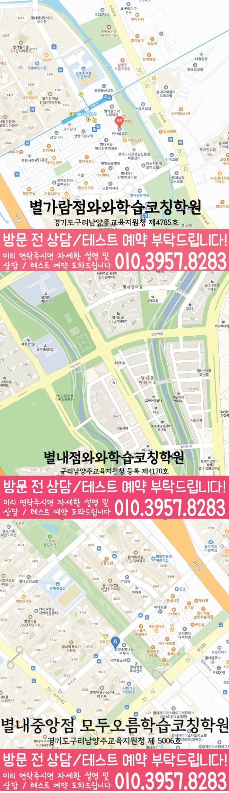

별내점의 자료상 수학 수강 학년은 중2를 포함합니다. 현재 중2 수학 모집 여부와 개인별 시간표는 상담에서 확인해 주세요.
과학은 생명과학·화학을 상담할 수 있습니다.
현재 중2 수학 모집 여부와 개인별 수업 시간표는 별내점 상담에서 확인해 주세요. 자료에는 중등 과목당 3타임부터 안내가 있습니다. 수학의 실제 주당 횟수·시간과 학습 구성을 확인해 주세요.
지점 운영 안내와 수학 시간표 확인
평일 오후 2시 30분 이후
주말 정규 수업은 운영하지 않습니다.
운영 안내는 학생의 고정 수업 시간표를 뜻하지 않습니다. 하교 시각과 가능한 요일을 함께 전달해 주세요.
위 내용은 지점 운영 안내입니다. 신청할 중2 수학의 수업 요일·시간과 모집 여부는 별도로 확인해 주세요.
건물과 입구 확인
별내 카페거리 건너편 메가커피 건물 5층입니다.
수업을 함께할 선생님을 살펴보세요
이 페이지에 연결된 지점의 선생님 소개입니다. 질문을 듣고 복습을 돕는 지도 방식을 읽고, 학생에게 필요한 도움을 상담에서 이야기해 보세요.
실제 지점과 학년별 공부 안내
중2 수학 학습 점검과 상담 준비
별내신도시 중2 수학학원을 찾는 학부모를 위해 경기 남양주시 별내신도시 중2 학생의 현재 수준 진단, 학교 진도 연결, 오답과 내신 대비 기준을 정리한 정보 페이지입니다.
핵심 요약
별내신도시 중2 수학 한눈에 보기
별내신도시 중2 수학학원 페이지는 경기 남양주시 별내신도시에서 중2 수학 수업을 찾는 학부모를 위한 지역 기반 정보성 안내입니다. 별내신도시 중2 수학학원을 비교하는 과정에서는, 제공 주소는 경기 남양주시 순화궁로 349 삼광프라자 501호이며 현재 수준 진단, 학교 진도 확인, 개념·오답·내신 대비와 상담 질문을 다룹니다. 학습 관리 관련 항목은 실제 운영 조건을 최신 서면 자료로 확인하도록 안내하고 특정 성적 상승이나 입시 결과를 보장하지 않습니다.
LOCAL STUDY GUIDE
별내신도시 중2 수학학원 선택 기준
경기 남양주시 별내신도시에서 중2 수학학원을 찾는다면, 기말고사 뒤 학습 방식을 바꾸려는 시점에 익숙한 유형은 풀지만 표현이 바뀌면 접근을 멈추는 학생에게는 개념 설명 뒤 독립 풀이와 오답 재도전을 확인하고 학교 일정에 맞춰 계획을 조정하는 수업이 적합합니다. 별내신도시의 별가람중·한별중 학생은 최신 학교 진도와 시험 범위를 기준으로 복습 우선순위를 잡고, 같은 학년이라도 단원별 결손에 따라 숙제와 문제 난도를 다르게 정할 필요가 있습니다. 학원 주소로 제공된 곳은 경기 남양주시 순화궁로 349 삼광프라자 501호이며, '학습 관리' 관련 조건은 홍보 문구로 추정하지 말고 등록 시점의 최신 안내와 학생의 주간 일정에 맞는지 확인해야 합니다.
등록을 서두르기 전에 점검할 신호
학생의 과제 수행 과정을 살피면, 상담 직후 지나치게 빠른 등록 결정을 요구하거나 수업료, 교재비, 보강, 환불 조건을 구두로만 안내한다면 서면 자료를 받은 뒤 다시 비교하는 것이 안전합니다. 가정의 주간 일정을 고려하면, 학교별 대비를 강조하면서도 최신 시험 범위나 학생이 사용하는 교과서를 확인하지 않는다면 명확한 준비 계획이 있는지 추가로 질문할 필요가 있습니다. 별내신도시에서 수업 적합성을 점검할 때에는, 상담 내용과 실제 수업 담당자, 반 인원, 시간표가 달라질 수 있으므로 등록 전에 변경 가능 항목과 변경 시 안내 방식을 문서로 남겨 두는 편이 좋습니다.
현재 실력을 먼저 어떻게 진단해야 할까
별내신도시 중2 수학학원의 선택 기준으로 보면, 중2 수학의 출발점은 중1 계산과 문자식의 빈틈, 현재 학교 진도의 이해도, 새 문제에 적용하는 힘을 서로 다른 지표로 점검하는 것입니다. 경기 남양주시 별내신도시 학부모가 같은 기준을 적용할 때에는, 진단 문제는 어려운 문항을 많이 푸는 시험이 아니라 설명 없이 풀 수 있는 범위와 도움을 받은 뒤 해결되는 범위를 가르는 자료로 활용하는 편이 좋습니다. 별내신도시 중2 수학학원을 비교하는 과정에서는, 상담이 끝날 때에는 복습과 선행의 비율이 글이나 표로 남아야 이후 수업이 계획대로 진행되는지 확인할 수 있습니다.
중2 학교 수업과 학원 진도의 연결
별내신도시에서 별가람중·한별중 학생을 지도한다면 학교별 실제 수업 진도와 시험 범위 공지 시점을 우선 확인하고, 같은 중2 과정이라도 준비 순서를 학교 일정에 맞춰 조정할 필요가 있습니다. 경기 남양주시 별내신도시 학부모가 같은 기준을 적용할 때에는, 학교 수업에서 막힌 단원은 그 주 안에 짧게 복습하고, 학원에서는 다음 개념과 연결되는 문제까지 확인해야 진도 차이가 누적되지 않습니다. 별내신도시에서 수업 적합성을 점검할 때에는, 내신 기간에는 학교 프린트와 교과서 예제의 표현을 기준 자료로 삼되, 답을 외우는 방식이 아니라 조건이 달라진 문제에서도 같은 개념을 적용할 수 있는지 점검해야 합니다.
등록 전에 살펴볼 학습 관리의 핵심
'학습 관리'는 추상적인 관리 용어로 끝내지 말고 측정 기준, 기록 주기, 학생 행동에 반영하는 방법과 재점검 시점을 정해 학생과 학부모가 같은 변화를 확인할 수 있어야 합니다. 중2 수학에서는 총 공부시간보다 풀이 시작 속도, 빈칸 수, 오답 재현률, 단원별 정답률처럼 학습 행동과 결과를 함께 볼 수 있는 지표가 유용합니다. '학습 관리'의 효과를 설명할 때에는 성적 상승을 단정하기보다 처음 세운 기준과 몇 주 뒤의 기록을 비교해 무엇이 달라졌고 무엇이 남았는지 보여 주는 쪽이 설득력 있습니다.
계획표를 실제 행동으로 바꾸는 장치
별내신도시의 중2 수학 계획에서는, 자기주도학습은 학생에게 모든 계획을 맡기는 일이 아니라 처음에는 선택 가능한 분량과 순서를 제시하고, 실행 기록을 바탕으로 다음 결정을 스스로 하게 만드는 과정입니다. 교재와 오답 기록을 나란히 보면, 모르는 문제를 오래 붙잡거나 바로 해설을 보는 두 극단을 피하려면 시도 시간, 표시 방법, 질문으로 넘기는 기준을 학생과 함께 정해야 합니다. 이 학생 유형에 맞춰 보면, 독립성의 변화는 혼자 공부한 총시간보다 필요한 도움을 구체적으로 요청하고, 받은 설명을 다시 자신의 풀이로 재현하는 능력에서 확인할 수 있습니다.
학원을 비교할 때 던져야 할 구체적인 질문
학교 시험 전후의 흐름으로 보면, 상담에서는 교재 변경 조건과 진도 기준을 세부적인 숫자와 사례로 설명해 달라고 요청하면 운영 방식을 비교하기 쉽습니다. 별내신도시에서 수업 적합성을 점검할 때에는, 성적이 오를 것이라는 약속보다 첫 달에 남길 기록과 학부모에게 공유할 항목을 확인하는 편이 수업의 책임 범위를 판단하는 데 도움이 됩니다. 경기 남양주시 별내신도시 학부모가 같은 기준을 적용할 때에는, 최종 선택 전에는 학생이 직접 짧은 문제를 풀고 설명을 들어 본 뒤, 이해한 내용을 자신의 말로 다시 설명할 수 있는지 확인하는 절차가 도움이 됩니다.
별내신도시 학습 상담과 수강 범위
별내점의 자료상 수학 수강 학년은 중2를 포함합니다. 현재 중2 수학 모집 여부와 개인별 시간표는 상담에서 확인해 주세요.
학습 준비 내용과 실제 개설 과목은 별개입니다. 현재 교재의 범위와 도움을 받은 단계를 정리하고, 학생에게 맞는 시작 과제를 상담하세요.
수업 방식을 비교할 때 확인할 질문
설명을 듣는 시간과 직접 해보는 시간
학생이 먼저 답의 이유를 설명할 기회가 있는지 물어보세요. 수업 이름이나 교재만으로 개별 확인이 충분하다고 판단하지 않습니다.
과제와 피드백이 이어지는 방식
오답을 다음 연습에 반영하는 방법, 질문을 남길 경로, 보호자가 확인할 기록과 시점을 상담에서 확인하세요.
중2 수학 교습비 자료와 신청 조건
중2 수학의 비용은 등록 학원과 신청 과정을 함께 확인해 주세요. 아래는 해당 기관의 교습비 게시표 원문입니다.
중2 수학 등록 과정·주당 횟수·총 교습시간을 게시표 항목과 대조해 주세요. 중2 자료상 학년 확인.
교재비와 추가 비용
교재비·추가 과정 비용과 두 과목 신청 시 합계 금액을 구분해 확인해 주세요. 게시표 기준일과 현재 적용 금액은 다를 수 있습니다.
다른 과목·복합 과정의 금액을 수학의 확정 수업료로 계산하지 않습니다. 현재 모집 여부·할인·환불 조건과 최종 적용 금액은 등록 기관 상담에서 확인해 주세요.
별내신도시 학교 자료와 상담 준비
학교 목록은 지역 상담에 참고할 정보입니다. 학교와의 제휴, 재원생 현황이나 특정 시험 대비반 운영을 뜻하지 않습니다.
중학교 참고 목록
별가람중학교 · 한별중학교 · 한삼중학교
교과서와 최근 배부 자료에서 현재 배우는 범위를 표시해 주세요. 영어 답의 근거와 수학의 첫 풀이를 준비하면 학교 이름만으로 수준을 판단하는 일을 줄일 수 있습니다.
CHECKLIST
상담 전 체크리스트
1
최근 시험지
별내신도시 상담 준비: 점수보다 어떤 단원에서 왜 틀렸는지 확인하는 데 필요합니다.
2
학교 시험 범위
별내신도시 상담 준비: 다니는 학교의 시험 범위와 수행평가 일정을 확인합니다.
3
현재 교재·진도
별내신도시 상담 준비: 지금까지 사용한 교재와 진도를 확인해 시작 지점을 잡습니다.
4
오답 정리 습관
별내신도시 상담 준비: 기존에 오답을 정리해 온 방법이 있다면 함께 확인합니다.
FAQ
별내신도시 중2 수학학원 자주 묻는 질문
별내신도시 중2 수학학원은 어떤 중2 학생에게 맞나요?
현재 가정한 유형은 기말고사 뒤 학습 방식을 바꾸려는 시점에 익숙한 유형은 풀지만 표현이 바뀌면 접근을 멈추는 학생으로, 설명을 들은 직후뿐 아니라 다음 날에도 같은 개념을 혼자 적용하는지 확인하는 수업이 필요합니다. 경기 남양주시 별내신도시 중2 수학 상담에서는 수행평가 준비 일정을 근거로 확인한 뒤 다음 상담 때 비교할 기준으로 남겨 두세요.
별내신도시 지역의 학교별 내신 대비는 어떻게 확인해야 하나요?
별내신도시 중2 수학학원의 선택 기준으로 보면, 학교 이름만으로 대비 여부를 판단하지 말고 학생이 현재 사용하는 교과서와 프린트, 최신 시험 범위표가 수업 계획에 언제 반영되는지 질문해야 합니다. 별내신도시 중2 수학학원의 선택 기준으로 보면, 시험 뒤에는 점수보다 오류를 개념, 해석, 계산, 시간, 검산으로 나누어 다음 학습에 반영하는 절차가 있는지도 확인할 필요가 있습니다. 경기 남양주시 별내신도시 중2 수학 상담에서는 이전 단원 복습 결과를 근거로 확인한 뒤 혼자 실행할 최소 분량을 정해 보세요.
학습 관리 상담에서는 무엇을 구체적으로 물어봐야 하나요?
핵심 확인 항목은 측정 기준, 기록 주기, 학생 행동에 반영하는 방법과 재점검 시점이며, 상담 답변은 적용 날짜와 담당자, 예외 조건이 포함된 최신 자료로 다시 확인하는 편이 안전합니다. 별내신도시의 중2 수학 계획에서는, 해당 조건이 수업 횟수, 비용, 통학, 과제, 피드백 중 어느 항목에 영향을 주는지 나누어 물으면 가정의 일정과 비교하기 쉬워집니다. 경기 남양주시 별내신도시 중2 수학 상담에서는 수업 전 질문 목록을 근거로 확인한 뒤 우선 보완할 단원을 한 가지로 좁혀 보세요.
별내신도시 중2 수학학원 수업이 맞는지는 언제 판단할 수 있나요?
경기 남양주시 별내신도시 학부모가 같은 기준을 적용할 때에는, 첫날의 만족감만으로 결정하기보다 3~4주 동안 출석, 숙제 완성도, 질문의 구체성, 오답 재발, 독립 풀이 시간을 같은 기준으로 기록해 보는 방법이 더 타당합니다. 경기 남양주시 별내신도시 중2 수학 상담에서는 학교에서 받은 범위표를 근거로 확인한 뒤 학교 진도와 연결할 순서를 정해 보세요.
중2 수학 수강 학년은 자료에서 확인되나요?
별내점의 자료상 수학 수강 학년은 중2를 포함합니다. 현재 중2 수학 모집 여부와 개인별 시간표는 상담에서 확인해 주세요. 현재 중2 수학 모집 여부와 개인별 수업 시간표는 별내점 상담에서 확인해 주세요. 자료에는 중등 과목당 3타임부터 안내가 있습니다. 수학의 실제 주당 횟수·시간과 학습 구성을 확인해 주세요.
중2 수학 상담은 어느 학원으로 방문하나요?
안내에 연결된 등록 학원은 별내점와와학습코칭학원이며 주소는 경기 남양주시 순화궁로 349 삼광프라자 501호입니다. 신청 학년의 수학 개설 여부와 상담 시각을 확인한 뒤 방문해 주세요.
중2 수학 교습비와 추가 비용은 어떻게 확인하나요?
별내점와와학습코칭학원의 교습비 게시표 기준일 2025-07-17과 중2 수학 등록 과정·주당 횟수·총 교습시간을 대조해 주세요. 교재비·추가 과정 비용과 두 과목 신청 시 합계 금액·최종 적용 금액은 기관 상담에서 확인해 주세요.
지도와 학습 안내 이미지
학습 안내 이미지 펼쳐보기

와와학습코칭센터 별내점 기준으로 별내신도시 학생의 상담 범위를 확인합니다. 실제 방문·상담 전에는 주소와 이동 동선을 함께 확인해 주세요.